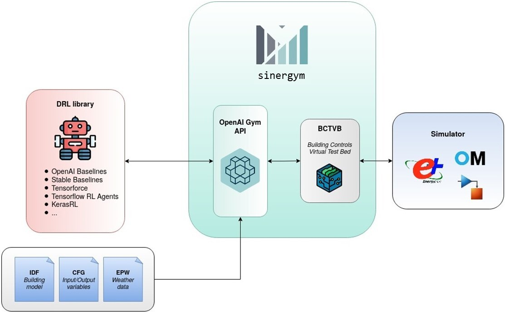

Welcome to sinergym!
See also
This is a project based on Zhiang Zhang and Khee Poh Lam Gym-Eplus.
The goal of sinergym is to create an environment following OpenAI Gym interface for wrapping simulation engines (Energyplus) for building control using deep reinforcement learning.
{kind=link}
The main functionalities of Sinergym are the following:
Include different simulation engines. Communication between Python and EnergyPlus is established using BCVTB middleware. Since this tool allows for interacting with several simulation engines, more of them (e.g. OpenModelica) could be included in the backend while maintaining the Gym API.
Benchmark environments. Similarly to Atari or Mujoco environments for RL community, we are designing a set of environments for benchmarking and testing deep RL algorithms. These environments may include different buildings, weathers, action/observation spaces, function rewards, etc.
Customizable environments. We aim to provide a package that allows to modify experimental settings in an easy manner. The user can create his own environments defining his own building model, weather, reward, observation/action space and variables, environment name, etc. The user can also use these pre-configured environments available in Sinergym and change some aspect of it (for example, the weather) in such a way that he does not have to make an entire definition of the environment and can start from one pre-designed by us. Some parameters directly associated with the simulator can be set as extra configuration as well, such as people occupant, time-steps per simulation hour, run-period, etc.
Customizable components: Sinergym is easily scalable by third parties. Following the structure of the implemented classes, new custom components can be created for new environments such as function rewards, wrappers, controllers, etc.
Automatic Building Model adaptation to user changes: Building models (IDF) will be adapted to specification of each simulation by the user. For example,
DesigndaysandLocationcomponents from IDF files will be adapted to weather file (EPW) specified in Sinergym simulator backend without any intervention by the user (only the environment definition). BCVTB middleware external interface in IDF model and variables.cfg file is generated when simulation starts by Sinergym, this definition depends on action and observation space and variables defined. In short, Sinergym automates the whole process of model adaptation so that the user only has to define what he wants for his environment.Automatic external interface integration for actions. As far as building model (IDF) adaptation is concerned, it is not enough to set up an external interface and set user-specified variable names. It is also necessary to make certain adjustments to the building components to be controlled, so that they use the external variables defined by the user instead of the default controllers implicitly provided by the building model. To do this, Sinergym provides a functionality that can adapt actuators to the desired building zones by providing a specification by the user. The building model will be manipulated based on this information automatically. In other words, if the components to be controlled are directly supported by Sinergym, the building model can be modified accordingly to be controlled, otherwise the user will have to modify the IDF file manually. More actuator types will be directly supported by Sinergym in the future.
Stable Baseline 3 Integration. Some functionalities like callbacks have been customized by our team in order to test easily these environments with deep reinforcement learning algorithms. This tool can be used with any other DRL library that supports the OpenAI gym interface as well.
Google Cloud Integration. Whether you have a Google Cloud account and you want to use your infrastructure with Sinergym, we tell you some details about how doing it.
Mlflow tracking server. Mlflow is an open source platform for the machine learning lifecycle. This can be used with Google Cloud remote server (if you have Google Cloud account) or using local store. This will help you to manage and store your runs and artifacts generated in an orderly manner.
Data Visualization. Using Sinergym logger or Tensorboard server to visualize training and evaluation information in real-time.
Notebooks examples. Sinergym develops code in notebook format with the purpose of offering use cases to the users in order to help them become familiar with the tool. They are constantly updated, along with the updates and improvements of the tool itself.
Many more!
Note
This is a work in progress project. Stay tuned for upcoming releases!
Contributing
For all those interested in improving Sinergym, there are always improvements to be made. You can check issues in the repo.
If you want to contribute, please read CONTRIBUTING.md first.
Examples
The examples can be run if you have your computer or container properly configured (see Installation section) from our notebooks hosted in the examples folder of the official Sinergym repository.
Citing Sinergym
If you use Sinergym in your work, please cite our paper:
@inproceedings{2021sinergym,
title={Sinergym: A Building Simulation and Control Framework for Training Reinforcement Learning Agents},
author={Jiménez-Raboso, Javier and Campoy-Nieves, Alejandro and Manjavacas-Lucas, Antonio and Gómez-Romero, Juan and Molina-Solana, Miguel},
year={2021},
isbn = {9781450391146},
publisher = {Association for Computing Machinery},
address = {New York, NY, USA},
url = {https://doi.org/10.1145/3486611.3488729},
doi = {10.1145/3486611.3488729},
booktitle = {Proceedings of the 8th ACM International Conference on Systems for Energy-Efficient Buildings, Cities, and Transportation},
pages = {319–323},
numpages = {5},
}